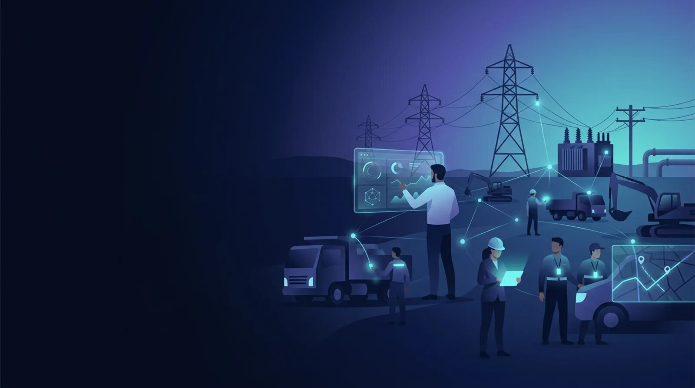

Delivering AI and IoT software, rugged hardware, and enterprise integration solutions for utility construction with RFID, BLE, GPS, and LoRaWAN technologies.

Utility construction projects demand accurate coordination of distributed field crews, specialized equipment, utility materials, subcontractors, inspection teams, and project management personnel. Large transmission line installations, underground pipeline construction, electrical substation expansions, gas distribution upgrades, and municipal utility relocation projects often span extensive right-of-way corridors where maintaining operational visibility becomes increasingly complex.
UtilCon AI develops AI and IoT software, rugged field hardware, and enterprise integration solutions that help construction organizations improve workforce identification, controlled site access, equipment accountability, inventory visibility, work package execution, and project documentation throughout every phase of utility infrastructure construction.
Rather than focusing on general construction operations, UtilCon AI specializes in identification and location solutions specifically designed for utility construction environments where overhead transmission systems, underground utilities, substations, pipeline corridors, and remote construction sites introduce unique operational challenges.
Our solutions support project managers, utility contractors, engineering firms, EPC organizations, public utilities, infrastructure developers, safety managers, and field supervisors responsible for coordinating multiple construction crews working simultaneously across geographically dispersed projects.
Utility infrastructure projects form the backbone of modern communities. Electric transmission systems, natural gas pipelines, water distribution networks, telecommunications corridors, renewable energy interconnections, and underground utility systems require precise coordination among thousands of workers and millions of dollars of specialized equipment.
Our mission is to improve operational visibility across utility construction by delivering AI and IoT solutions focused on identifying people, locating critical assets, managing controlled access, supporting inventory accountability, and improving construction documentation.
UtilCon AI emphasizes practical deployment methods that integrate naturally into existing construction workflows rather than requiring organizations to redesign their operational processes.
Core objectives include:
Utility construction differs significantly from many other construction disciplines.
Projects frequently involve:
Personnel and equipment continuously move between staging locations, excavation areas, material storage yards, substations, inspection checkpoints, and project offices.
Managing these dynamic operations requires more than traditional paperwork or manual spreadsheets.
AI and IoT identification and location solutions help construction teams establish consistent digital records while supporting workforce accountability and equipment visibility throughout the project lifecycle.
Utility contractors routinely encounter operational challenges that affect project execution.
Common examples include:
These challenges increase as project scale expands and additional contractors become involved.
AI and IoT solutions help organizations improve operational consistency while maintaining accurate identification records throughout every construction phase.
Utility construction increasingly depends upon accurate operational data.
Knowing precisely:
supports safer, more accountable project execution.
Rather than relying exclusively on manual reporting, identification technologies provide objective digital records supporting construction management, engineering review, project documentation, and regulatory compliance.
Identification systems become especially valuable during:
Artificial Intelligence of Things, commonly called AIoT or AI and IoT, combines artificial intelligence with connected devices, industrial equipment, RFID technologies, BLE communications, GPS positioning, edge computing, and enterprise software.
Within utility construction, UtilCon AI applies these technologies primarily to identification and location workflows rather than general sensing applications.
Primary operational focus includes:
Construction organizations can digitally identify authorized personnel throughout active work locations using secure workforce identification methods.
Applications include:
Construction projects often require different access permissions for engineers, inspectors, subcontractors, equipment operators, safety personnel, and visitors.
Controlled access solutions help organizations manage entry based upon project roles, certifications, and operational requirements.
Utility construction depends upon specialized equipment including:
Digital asset identification improves equipment accountability across distributed project sites.
Utility construction projects require dependable technology capable of operating under demanding field conditions while maintaining consistent communication between crews, equipment, and project management teams.
UtilCon AI combines enterprise software with rugged hardware designed specifically for identification and location applications across utility construction environments.
Our solution portfolio includes:
RFID technologies support identification workflows throughout utility construction by assigning unique digital identities to personnel, equipment, utility poles, cable reels, pipe sections, transformers, switchgear components, and construction materials.
Typical applications include:
Bluetooth Low Energy (BLE) technologies help establish proximity awareness between authorized personnel, vehicles, work zones, and equipment.
Typical deployment scenarios include:
GPS devices provide location visibility for mobile construction assets operating across extensive project corridors.
Common applications include:
Certain utility construction locations operate with intermittent network connectivity.
Edge computing allows field systems to continue processing identification records locally before synchronizing with central enterprise software when communications become available.
This approach supports remote transmission corridors, pipeline construction, and geographically dispersed infrastructure projects.
Utility construction environments expose equipment to conditions rarely encountered in conventional commercial facilities.
Typical operating conditions include:
Hardware selected for these environments should support reliable operation while minimizing maintenance interruptions.
Depending on project requirements, rugged equipment may include:
Selecting appropriate field equipment helps improve long-term operational reliability throughout extended construction programs.
Utility construction projects progress through multiple phases, each requiring different operational priorities.
UtilCon AI solutions support identification and location throughout the construction lifecycle.
Planning teams establish:
Mobilization activities often include:
During construction, organizations coordinate:
Closeout activities typically involve:
Maintaining consistent identification records throughout these phases helps reduce administrative effort while improving project documentation.
Although many operational principles remain consistent, different utility construction projects require unique deployment considerations.
UtilCon AI supports projects including:
Projects involving:
often require workforce accountability across long linear construction corridors.
Pipeline projects involve:
Identification technologies help organize equipment, personnel, and installation documentation throughout these activities.
Substation construction typically includes:
Managing equipment movement within confined construction sites benefits from accurate identification workflows.
Municipal utility projects frequently involve:
Projects often occur within congested urban environments requiring careful coordination among multiple contractors.
UtilCon AI was created within Aperture Venture Studio with support from GAO, building upon decades of practical IoT deployment experience across industrial sectors.
This experience contributes practical knowledge gained through thousands of IoT projects involving identification technologies, RFID systems, BLE deployments, GPS solutions, industrial communications, and enterprise software integration.
Supported by significant investments in research and development, stringent quality assurance processes, and experienced engineering professionals, our team assists organizations deploying identification solutions across utility construction environments.
Over the years, organizations supported through GAO have included Fortune 500 companies, leading research institutions, major universities, and government agencies throughout the United States and Canada.
Our technical specialists understand the operational realities of deploying identification technologies within challenging construction environments where reliability, scalability, maintainability, and operational continuity remain essential priorities.
Utility construction projects operate under rigorous safety requirements, contractor qualification processes, and documentation obligations. Workforce accountability, controlled access, equipment identification, and accurate construction records contribute to safer operations while supporting project governance.
UtilCon AI develops AI and IoT solutions that help organizations strengthen operational discipline through reliable identification and location workflows. Rather than replacing established construction procedures, our solutions complement existing safety programs, permit processes, contractor management systems, and quality assurance practices.
Typical operational objectives include:
These capabilities become increasingly valuable during long-duration transmission projects, regional pipeline programs, substation expansion initiatives, and municipal utility infrastructure improvements involving numerous contractors and geographically dispersed work locations.
Utility construction projects involve professionals from numerous disciplines working together throughout planning, construction, commissioning, and project completion.
UtilCon AI solutions support collaboration among:
Project managers require accurate operational visibility across multiple crews, subcontractors, work packages, and construction schedules.
Identification-based workflows help maintain consistent project records while improving coordination across active construction locations.
Field supervisors benefit from reliable workforce identification, equipment accountability, contractor verification, and work assignment documentation.
This information supports daily operational planning and resource allocation.
Safety professionals oversee site access, contractor qualifications, workforce accountability, emergency response planning, and restricted work zones.
Digital identification records can assist safety documentation while supporting existing safety management procedures.
Engineering personnel often require accurate installation records, equipment identification, material traceability, and project documentation during construction and commissioning.
Reliable digital records simplify project verification and long-term infrastructure documentation.
Enterprise IT teams support software deployment, user management, system connectivity, cybersecurity policies, and ongoing operational maintenance.
UtilCon AI solutions are designed to integrate with existing enterprise environments while supporting scalable deployment across multiple construction programs.
Utility construction continues to evolve as infrastructure projects become larger, more geographically distributed, and increasingly dependent upon accurate operational information.
UtilCon AI continuously refines its software, field hardware, and deployment methodologies through ongoing engineering, product development, and customer collaboration.
Areas of continued investment include:
Every enhancement focuses on solving practical operational challenges encountered by utility construction organizations rather than introducing unnecessary complexity.
Organizations responsible for utility construction programs require technology partners with practical experience in industrial identification solutions and large-scale deployment methodologies.
UtilCon AI combines domain expertise in utility construction with extensive experience in RFID, BLE, GPS, edge computing, and enterprise software integration.
Organizations work with UtilCon AI because we provide:
Supported by GAO's extensive IoT experience, our engineering teams continue to assist organizations implementing practical identification and location solutions across utility construction projects throughout North America.
UtilCon AI solutions support identification and location workflows across numerous utility construction activities, including:
Each deployment can be configured according to workforce size, project duration, geographic coverage, contractor structure, regulatory requirements, and enterprise integration objectives.
Utility construction will continue expanding to support renewable energy development, transmission modernization, underground utility replacement, smart infrastructure initiatives, and resilient public utility systems.
Future construction programs will increasingly depend upon accurate digital records, workforce accountability, equipment visibility, and integrated project documentation.
UtilCon AI remains committed to helping utility construction organizations improve operational efficiency through AI and IoT solutions centered on reliable identification and location technologies.
By combining practical engineering expertise, industrial-grade RFID, BLE, GPS, and edge computing technologies with enterprise software designed for demanding construction environments, UtilCon AI supports safer, more organized, and more transparent utility infrastructure projects from mobilization through project completion.
Whether your organization is planning a new transmission corridor, expanding a substation, constructing a regional pipeline, or coordinating multiple utility infrastructure projects, UtilCon AI can help design identification and location solutions tailored to your operational requirements.
Working together with Aperture Venture Studio and supported by GAO's decades of IoT experience, UtilCon AI delivers practical AI and IoT solutions designed specifically for the operational realities of utility construction.
Contact UtilCon AI →